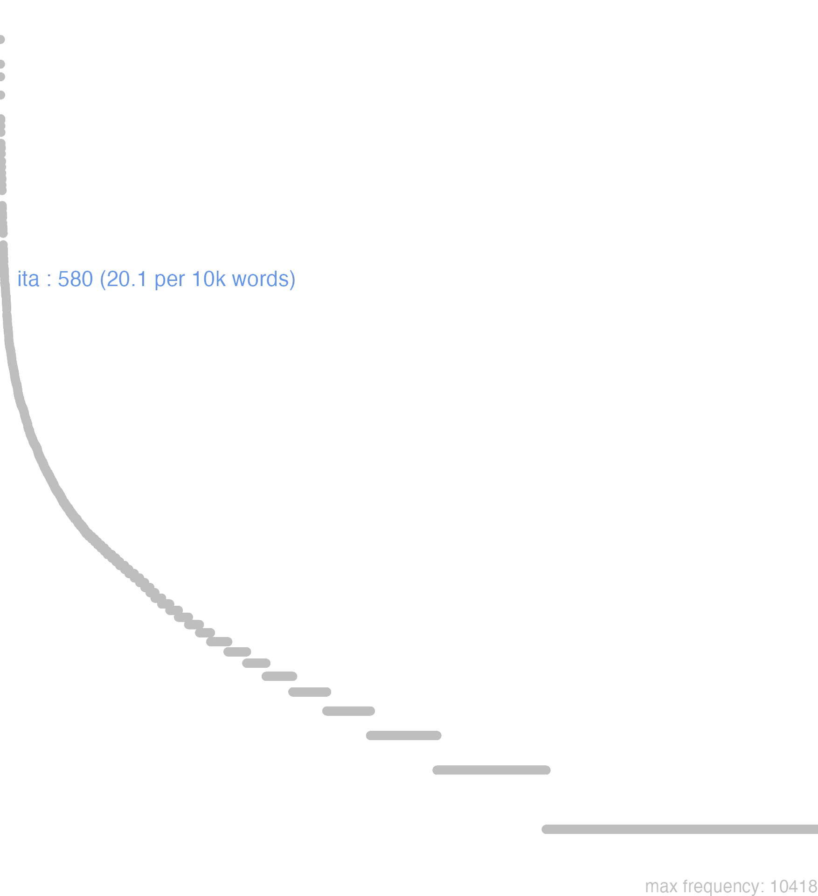

82 ita
82.0.0.1 bases lexicais
id: http://lila-erc.eu/data/id/lemma/109126
classe: advérbio
paradigma: indeclinável
outras grafias:
variantes do lema:
no data
ĭtă
ĭtănĕ
82.0.0.2 dicionários tradicionais
ita
adv.
adv.
1 Especifica uma coisa dita ou que vai ser dita: assim, deste modo, como disse, como se segue Cíc. Clu. 51; C ic. Verr. 5, 110.
2 Nas respostas: como disse, como disseste, sim, certamente, exatamente:
3 Como correlativo de ut nas comparações: assim … como Plaut. Merc. 262.
4 Daí, nas fórmulas de afirmação, exprimindo um desejo podendo aliás ut vir explícito ou não: assim, oxalá:
5 Donde o emprego como consecutivo: tanto … que, a tal ponto … que, de tal sorte … que Cíc. Lae. 19.
[EXEMPLOS]
2
militem pol tu aspexisti? - Ita. Plaut. Mil. 1. 262 “por Pólux, tu viste o militar? -Sim”.
4
ita me Venus amet ut ego te numquam sinam Plaut. Curc. 209 «assim me ame Vênus, como nunca te darei a permissão» Cíc. Fam. 16, 20, 1.
no data
Ita
adv.
adv.
1 Cic. assim, de tal sorte, sim, tambem, na verdade, sem duvida, por tanto.
[EXEMPLOS]
X
quid ita? Ter Porque motivo?
Ita
Adverb. respondendi, vel affirmandi
Adverb. respondendi, vel affirmandi
1 sim, ou assim
2 cum negatione pro Valdè ponitur
3 ita de tal modo, ou maneira cum Ut, & conjunctivo.
[EXEMPLOS]
1
ita loquor assim costumo fallar; ou digo, o que na verdade he
2
non ita, & c i, non valdè
Ita
aduerb. similitudinis.
aduerb. similitudinis.
1 assi
[EXEMPLOS]
1
ita legit
Ita
82.0.0.3 dados de corpus
![This chart plots collocate by scoreSUBST, for the headword ita here are all the values plotted: collocate: dico; scoreSUBST: 0. collocate: ut; scoreSUBST: 0. collocate: censeo; scoreSUBST: 0. collocate: fio; scoreSUBST: 0. collocate: atque; scoreSUBST: 0. collocate: si; scoreSUBST: 0. collocate: sum; scoreSUBST: 0. collocate: facio; scoreSUBST: 0. collocate: tamen; scoreSUBST: 0. collocate: sed; scoreSUBST: 0. collocate: cum; scoreSUBST: 0. collocate: sui; scoreSUBST: 0. collocate: ego; scoreSUBST: 0. collocate: ni; scoreSUBST: 0. collocate: enim; scoreSUBST: 0. collocate: multus; scoreSUBST: 0. collocate: loquor; scoreSUBST: 0. collocate: scribo; scoreSUBST: 0. collocate: uiuo; scoreSUBST: 0. collocate: respondeo; scoreSUBST: 0. collocate: quidam; scoreSUBST: 0. collocate: uos; scoreSUBST: 0. collocate: finio; scoreSUBST: 0. collocate: sane; scoreSUBST: 0. collocate: necesse; scoreSUBST: 0. collocate: decerno; scoreSUBST: 0. collocate: Quirites; scoreSUBST: 0. collocate: laudo; scoreSUBST: 0. collocate: placeo; scoreSUBST: 0. collocate: denique; scoreSUBST: 0. collocate: nolo; scoreSUBST: 0](./Media/wordcloud__xx105-116-97xx__BY_collocate_scoreSUBST.webp)
![This chart plots collocate by scoreADJ, for the headword ita here are all the values plotted: collocate: dico; scoreADJ: 0. collocate: ut; scoreADJ: 0. collocate: censeo; scoreADJ: 0. collocate: fio; scoreADJ: 0. collocate: atque; scoreADJ: 0. collocate: si; scoreADJ: 0. collocate: sum; scoreADJ: 0. collocate: facio; scoreADJ: 0. collocate: tamen; scoreADJ: 0. collocate: sed; scoreADJ: 0. collocate: cum; scoreADJ: 0. collocate: sui; scoreADJ: 0. collocate: ego; scoreADJ: 0. collocate: ni; scoreADJ: 0. collocate: enim; scoreADJ: 0. collocate: multus; scoreADJ: 0. collocate: loquor; scoreADJ: 0. collocate: scribo; scoreADJ: 0. collocate: uiuo; scoreADJ: 0. collocate: respondeo; scoreADJ: 0. collocate: quidam; scoreADJ: 0. collocate: uos; scoreADJ: 0. collocate: finio; scoreADJ: 0. collocate: sane; scoreADJ: 0. collocate: necesse; scoreADJ: 0. collocate: decerno; scoreADJ: 0. collocate: Quirites; scoreADJ: 0. collocate: laudo; scoreADJ: 0. collocate: placeo; scoreADJ: 0. collocate: denique; scoreADJ: 0. collocate: nolo; scoreADJ: 0](./Media/wordcloud__xx105-116-97xx__BY_collocate_scoreADJ.webp)
![This chart plots collocate by scoreVERBO, for the headword ita here are all the values plotted: collocate: dico; scoreVERBO: 3. collocate: ut; scoreVERBO: 0. collocate: censeo; scoreVERBO: 2. collocate: fio; scoreVERBO: 2. collocate: atque; scoreVERBO: 0. collocate: si; scoreVERBO: 0. collocate: sum; scoreVERBO: 3. collocate: facio; scoreVERBO: 2. collocate: tamen; scoreVERBO: 0. collocate: sed; scoreVERBO: 0. collocate: cum; scoreVERBO: 0. collocate: sui; scoreVERBO: 0. collocate: ego; scoreVERBO: 0. collocate: ni; scoreVERBO: 0. collocate: enim; scoreVERBO: 0. collocate: multus; scoreVERBO: 0. collocate: loquor; scoreVERBO: 2. collocate: scribo; scoreVERBO: 2. collocate: uiuo; scoreVERBO: 2. collocate: respondeo; scoreVERBO: 2. collocate: quidam; scoreVERBO: 0. collocate: uos; scoreVERBO: 0. collocate: finio; scoreVERBO: 2. collocate: sane; scoreVERBO: 0. collocate: necesse; scoreVERBO: 0. collocate: decerno; scoreVERBO: 2. collocate: Quirites; scoreVERBO: 0. collocate: laudo; scoreVERBO: 2. collocate: placeo; scoreVERBO: 2. collocate: denique; scoreVERBO: 0. collocate: nolo; scoreVERBO: 2](./Media/wordcloud__xx105-116-97xx__BY_collocate_scoreVERBO.webp)
![This chart plots collocate by scoreADV, for the headword ita here are all the values plotted: collocate: dico; scoreADV: 0. collocate: ut; scoreADV: 0. collocate: censeo; scoreADV: 0. collocate: fio; scoreADV: 0. collocate: atque; scoreADV: 0. collocate: si; scoreADV: 0. collocate: sum; scoreADV: 0. collocate: facio; scoreADV: 0. collocate: tamen; scoreADV: 2. collocate: sed; scoreADV: 0. collocate: cum; scoreADV: 0. collocate: sui; scoreADV: 0. collocate: ego; scoreADV: 0. collocate: ni; scoreADV: 0. collocate: enim; scoreADV: 2. collocate: multus; scoreADV: 0. collocate: loquor; scoreADV: 0. collocate: scribo; scoreADV: 0. collocate: uiuo; scoreADV: 0. collocate: respondeo; scoreADV: 0. collocate: quidam; scoreADV: 0. collocate: uos; scoreADV: 0. collocate: finio; scoreADV: 0. collocate: sane; scoreADV: 2. collocate: necesse; scoreADV: 2. collocate: decerno; scoreADV: 0. collocate: Quirites; scoreADV: 0. collocate: laudo; scoreADV: 0. collocate: placeo; scoreADV: 0. collocate: denique; scoreADV: 2. collocate: nolo; scoreADV: 0](./Media/wordcloud__xx105-116-97xx__BY_collocate_scoreADV.webp)
![This chart plots collocate by scoreFUNC, for the headword ita here are all the values plotted: collocate: dico; scoreFUNC: 0. collocate: ut; scoreFUNC: 30. collocate: censeo; scoreFUNC: 0. collocate: fio; scoreFUNC: 0. collocate: atque; scoreFUNC: 0. collocate: si; scoreFUNC: 20. collocate: sum; scoreFUNC: 0. collocate: facio; scoreFUNC: 0. collocate: tamen; scoreFUNC: 0. collocate: sed; scoreFUNC: 0. collocate: cum; scoreFUNC: 20. collocate: sui; scoreFUNC: 0. collocate: ego; scoreFUNC: 0. collocate: ni; scoreFUNC: 20. collocate: enim; scoreFUNC: 0. collocate: multus; scoreFUNC: 0. collocate: loquor; scoreFUNC: 0. collocate: scribo; scoreFUNC: 0. collocate: uiuo; scoreFUNC: 0. collocate: respondeo; scoreFUNC: 0. collocate: quidam; scoreFUNC: 0. collocate: uos; scoreFUNC: 0. collocate: finio; scoreFUNC: 0. collocate: sane; scoreFUNC: 0. collocate: necesse; scoreFUNC: 0. collocate: decerno; scoreFUNC: 0. collocate: Quirites; scoreFUNC: 0. collocate: laudo; scoreFUNC: 0. collocate: placeo; scoreFUNC: 0. collocate: denique; scoreFUNC: 0. collocate: nolo; scoreFUNC: 0](./Media/wordcloud__xx105-116-97xx__BY_collocate_scoreFUNC.webp)
![This charts plots the frequency of lemma by author_Frequencies. The Tacitus subcorpus registers the highest normalized frequency, with the value of 27.46 and an absolute frequency of 8. The Cicero subcorpus follows, with a normalized frequency of 26.04 and an absolute frequency of 418. the subcorpus with the least normalized frequency is Vergilius with the normalized value of 0 and an absolute freqeuncy of 0. here are all the values: subcorpus: Caesar ; normalized frequency: 37 ; absolute frequency: 13.973865095551. subcorpus: Cicero ; normalized frequency: 418 ; absolute frequency: 26.0397199172709. subcorpus: Horatius ; normalized frequency: 6 ; absolute frequency: 5.32812361246781. subcorpus: Ovidius ; normalized frequency: 4 ; absolute frequency: 6.86341798215511. subcorpus: Phaedrus ; normalized frequency: 6 ; absolute frequency: 9.10885076666161. subcorpus: Sallustius ; normalized frequency: 26 ; absolute frequency: 24.116501252203. subcorpus: Seneca ; normalized frequency: 63 ; absolute frequency: 11.757899255333. subcorpus: Suetonius ; normalized frequency: 2 ; absolute frequency: 22.0507166482911. subcorpus: Tacitus ; normalized frequency: 8 ; absolute frequency: 27.4630964641263. subcorpus: Vergilius ; normalized frequency: 0 ; absolute frequency: 0. subcorpus: Hieronymus ; normalized frequency: 10 ; absolute frequency: 22.4668613794653](./Media/barchart__xx105-116-97xx__lemma_BY_author_Frequencies.webp)
![This charts plots the frequency of lemma by genre_Frequencies. The Prosa.epistolográfica subcorpus registers the highest normalized frequency, with the value of 31.8 and an absolute frequency of 120. The Prosa.oratória subcorpus follows, with a normalized frequency of 22.95 and an absolute frequency of 239. the subcorpus with the least normalized frequency is Poesia.épica with the normalized value of 0 and an absolute freqeuncy of 0. here are all the values: subcorpus: Prosa.histórica ; normalized frequency: 73 ; absolute frequency: 17.7706370651671. subcorpus: Prosa.filosófica ; normalized frequency: 118 ; absolute frequency: 19.4395479481392. subcorpus: Prosa.oratória ; normalized frequency: 239 ; absolute frequency: 22.947010647797. subcorpus: Prosa.epistolográfica ; normalized frequency: 120 ; absolute frequency: 31.797344921699. subcorpus: Poesia.lírica ; normalized frequency: 6 ; absolute frequency: 5.04753091612686. subcorpus: Poesia.didática ; normalized frequency: 10 ; absolute frequency: 8.48248367121893. subcorpus: Poesia.trágica ; normalized frequency: 4 ; absolute frequency: 3.47463516330785. subcorpus: Poesia.épica ; normalized frequency: 0 ; absolute frequency: 0. subcorpus: Prosa.ficcional ; normalized frequency: 10 ; absolute frequency: 22.4668613794653](./Media/barchart__xx105-116-97xx__lemma_BY_genre_Frequencies.webp)
![This charts plots the frequency of lemma by period_Frequencies. The II.d.C. subcorpus registers the highest normalized frequency, with the value of 26.18 and an absolute frequency of 10. The I.a.C. subcorpus follows, with a normalized frequency of 22.67 and an absolute frequency of 487. the subcorpus with the least normalized frequency is I.d.C. with the normalized value of 11.17 and an absolute freqeuncy of 73. here are all the values: subcorpus: I.a.C. ; normalized frequency: 487 ; absolute frequency: 22.6669769606702. subcorpus: I.d.C. ; normalized frequency: 73 ; absolute frequency: 11.167202080465. subcorpus: II.d.C. ; normalized frequency: 10 ; absolute frequency: 26.1780104712042. subcorpus: IV.d.C. ; normalized frequency: 10 ; absolute frequency: 22.4668613794653](./Media/barchart__xx105-116-97xx__lemma_BY_period_Frequencies.webp)
sit ita sane
Cic.Amici.18
Que seja assim, sem dúvida. [JDD]
ut scribis ita video
Cic.Att.2.15.1
Vejo, como tu me escreves. [JDD]
ita enim plerique iudicant
Sen.Ep.33.2
Pois a maioria assim julga. [JDD]
ita me multa sollicitant
Cic.Att.5.5.1
de tal modo muitas coisas me preocupam. [JDD]
prorsus ut scribis ita sentio
Cic.Att.2.17.1
Penso exatamente como escreves. [JDD]
sane ita cadebat ut vellem
Cic.Att.3.7.1
Sem dúvida, isso seria como eu queria. [JDD]
est iudices ita ut dicitur
Cic.Ver.2.4.117.2
É assim como se diz, juízes. [JDD]
sed si ita placuit laudemus
Cic.Att.2.1.10
Mas se assim agradou, louvemos. [JDD]
ita fac oro atque obsecro
Sen.Ep.19.1
Faz assim, peço e suplico. [JDD]
saepe ita me di iuvent
Cic.Att.1.16.1
Muitas vezes, assim me ajudem os deuses. [JDD]
Romae quod scribis sileri ita putabam
Cic.Att.2.13.2
O que escreves que em Roma calam, eu assim imaginava. [JDD]
ita vivam ut maximos sumptus facio
Cic.Att.5.15.2
Que eu viva assim como faço enormes despesas. [JDD]
istuc quidem Laeli ita necesse est
Cic.Amici.16
Isso, Lélio, é certamente necessário que seja assim. [JDD]
Atque ita locutus improbam leto dedit .
Phaed.1.22
E, tendo assim falado, matou a malvada. [JDD]
Atque ita correptum lacerat iniusta nece .
Phaed.1.1
E assim, o agarra e dilacera com injusta morte. [JDD]
occulte sed ita ut perspicuum sit invidet
Cic.Att.1.13.4
ocultamente, mas de um modo que é perceptível, me põe olho gordo. [JDD]
ita enim egi te cum superioribus litteris
Cic.Att.2.25.2
pois assim tratei contigo em minha última carta. [JDD, de outra edição]
proinde ita fac venias ut ad sitientis auris
Cic.Att.2.14.1
Por isso, procura vir como diante de ouvidos sedentos. [JDD]
ita ancipiti proelio diu atque acriter pugnatum est
Caes.Gal.1.26.1
Assim, em dupla batalha, combateu-se por longo tempo e encarniçadamente. [JDD]
cogor ut velim ita sit sed omnia metuo
Cic.Att.5.21.3
Sou obrigado; gostaria que fosse assim, mas tenho medo de tudo. [JDD]
tabellae ministrabantur ita ut nulla daretur uti rogas
Cic.Att.1.14.5
distribuíam tabuinhas de forma que não fosse dada nenhuma com o “a favor” [JDD]
ita est Lucili paucos seruitus plures seruitutem tenent
Sen.Ep.22.11
Assim é, Lucílio: a servidão retém a poucos, muitos retêm a servidão. [JDD]
et fuisset ita si homines transitum tempestatis exspectare potuissent
Cic.Att.2.21.2
e teria sido assim, se os homens tivessem podido aguardar a tempestade passar. [JDD]
ita cum maximis eum rebus liberares perparuam culpam relinquebas
Cic.Deiot.10
10 Assim, liberando-o das acusações mais graves, lhe deixavas uma muito pequena culpa. [JDD]
at eodem te cum cenauisses rediturum dixeras itaque fecisti
Cic.Deiot.19
No entanto, tinhas dito que, depois de teres jantado, voltarias ao mesmo local e assim o fizeste. [JDD]
ita utrumque per se indigens alterum alterius auxilio eget
Sal.Cat.1.7
Assim, ambas as coisas, insuficientes por si mesmas, necessitam da cooperação uma da outra. [JDD]
incredibile dicam sed ita clarum ut ipsum negaturum non arbitrer
Cic.Ver.2.4.57.14
Vou dizer algo incrível, mas tão evidente que eu creio que nem ele próprio vai negar. [JDD]
quamquam ea quoque sit effusa si ita in actis fuit
Cic.Phil.1.17.10
Embora ele também tenha sido gasto, se assim estava nas resoluções. [JDD]
ita fato placuit nullius rei eodem semper loco stare fortunam
Sen.Helv.7.10
Assim agradou ao destino que a sorte de coisa alguma ficasse sempre no mesmo lugar. [JDD]
itaque ego seueritati tuae ita ut oportet respondere non audeo
Cic.Cael.30
E assim eu não ouso responder à tua severidade como convinha. [JDD, de outra edição]
hoc me ita velle multi non credunt ex consuetudine aliorum
Cic.Att.5.2.3
Muitos não creem que eu queira isso desse modo com base no costume dos outros. [JDD]
ita nationes multae atque magnae nouo quodam terrore ac metu concitabantur
Cic.Man.23
Assim numerosas e grandes nações eram instigadas por um certo terror e medo inédito. [JDD]
ita fiet ut tua ista ratio existimetur astuta meum hoc consilium necessarium
Cic.Ver.1.34
Assim vai ocorrer que esse teu método seja considerado astuto e esta minha decisão, necessária. [JDD]
ita ut uos dicitis coguntur metusque illa in rectum non uoluntas mouet
Sen.Ep.121.7
Assim, como vós dizeis, são obrigados, e é o medo, não a vontade, que os move de modo correto.” [JDD]
quidam ita finiunt bonum est quod inuitat animos quod ad se uocat
Sen.Ep.118.8
Certos o definem assim: “O bem é o que convida os espíritos, o que os chama para si”. [JDD]
de ea re ita censuerunt comitia primo quoque tempore haberi esse e re publica
Cic.Att.4.17.3
Foram de parecer sobre esse assunto que as eleições fossem realizadas o quanto antes. [JDD, de outra edição]
est enim ita decretum ut si ille auctoritati senatus non paruisset ad saga iretur
Cic.Phil.6.9.6
Pois assim foi decretado: que, se ele não se submetesse à autoridade do senado, ia-se aos trajes de guerra. [JDD]
nos Tusculano ita delectamur ut nobis met ipsis tum denique cum illo venimus placeamus
Cic.Att.1.6.2
Eu me deleito tanto com a chácara de Túsculo que só me comprazo comigo mesmo quando vou lá. [JDD, de outra edição]
ita uero Quirites ei ut precamini eueniat atque huius amentiae poena in ipsum familiamque eius recidat
Cic.Phil.4.10.1
Que realmente assim aconteça, quirites, tal como pedis aos deuses, e que a pena de sua demência recaia sobre ele e sua gente! [JDD, de outra edição]
quod ni ita fuisset alterum illud exstitisset lumen ciuitatis ad paternam enim magnitudinem animi doctrina uberior accesserat
Cic.Sen.35
Se isso não tivesse sido assim, teria existido a segunda luz da cidade; pois à grandeza de espírito de seu pai teria se juntado uma instrução mais rica. [JDD, de outra edição]
agatur eius diligentissime cura ita tamen ut cum exiget ratio cum dignitas cum fides mittendum in ignes sit
Sen.Ep.14.2
Tenha-se com ele um cuidado com muita solicitude, porém, de tal modo que quando a razão, quando a dignidade, quando a lealdade exigirem, devemos lançá-lo ao fogo. [JDD]
quibus ex nauibus cum essent expositi milites circiter trecenti atque in castra contenderent Morini quos Caesar in Britanniam proficiscens pacatos reliquerat spe praedae adducti primo non ita magno suorum numero circumsteterunt ac si sese interfici nollent arma ponere iusserunt
Caes.Gal.4.37.1
Como desses navios tinham desembarcado cerca de trezentos soldados e se dirigiam ao acampamento, os morinos, que César, ao partir para a Britânia, tinha deixado pacificados, levados pela esperança de presa, os circundaram com um número não tão grande dos seus e ordenaram que depusessem as armas, se não queriam ser mortos. [JDD]
82.0.0.4 Diagrama de Zipf
